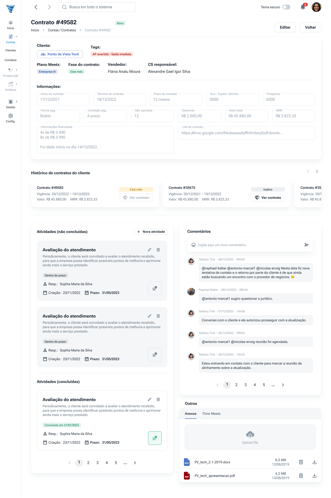

Plataforma de operações de prospecção
| Nesse projeto descrevo a trajetória do processo de discovery e entrega de uma plataforma unificadora da operação. | |
| Web Design | |
| UI DesignUX Design |
{kind=link}
Panorama do projeto:
O projeto contemplou todas as etapas da criação de uma plataforma agregadora de funções (para substituir outras plataformas usadas na operação: Pipefy, Woodpecker, Apolo, Gmail, Pipedrive) de uma empresa de prospecção de clientes. Nela ficam centralizadas todas as informações geradas e usadas na operação, suficiente para posterior uso em tomadas de decisão e inteligência de operação através do uso de aprendizado de máquina.
Definição do problema:
Por conta do uso de múltiplas plataformas no dia a dia, a informação ficava perdida por falta de integração. Quando era necessário haver a coleta de dados, era feita de forma manual, o que acarretava em um gasto excessivo de tempo e falhas entre as trocas.
Além disso, pela falta de centralização dos processos, cada colaborador fazia à sua maneira e ficava em posse de parte da informação. No seu desligamento, essa informação que estava em sua posse se perdia.
Desafios:
- Documentar todo o fluxo de operação e sugerir possíveis melhorias;
- Unificar os processos em um só local;
- Desenvolver uma interface fácil de aprender e mais atrativa do que as soluções que já estavam sendo usadas;
Métricas:
No show/assertividade; índice de qualidade; número de agendamentos; upsell/renovação; clientes por BDR; tempo gasto em tarefas; erros.
Processo de Design:
Utilizamos da metodologia de Design Thinking para guiar o processo. Seguimos os passos a seguir de forma a estabelecer um dual tracking, onde o processo de descobrimento seguia na frente do desenvolvimento e, uma vez definido a funcionalidade do produto, era entregue ao desenvolvimento e feito o descobrimento de uma nova funcionalidade.
{kind=link}
{kind=link}
Discovery:
Na fase de descobrimento usamos o processo a seguir:
Pesquisa qualitativa
{kind=link}
{kind=link}
Após as conversas iniciais de apresentação do problema, definimos quais perguntas seriam feitas e começamos a entrevistar primeiramente os stakeholders, depois lideranças e, por último, o pessoal da operação de fato.
{kind=link}
{kind=link}
Geramos uma série de citações de problemas, oportunidades de inivação, oportunidade de padronização, ideias, funcionalidades, dúvidas, necessidades, oportunidade de automação… enfim, separamos tudo isso e geramos um relatório de pesquisa com os principais pontos para apresentar aos stakeholders:
.png){kind=link}
{kind=link}
Definição e ideação
Uma vez que saímos da fase de abranger no entendimento do problema, discutimos quais seriam os próximos passos, quais funcionalidades seriam primeiramente desenvolvidas, o que precisaríamos desenvolver de base e para quando: definimos nosso MVP.
{kind=link}
Design
Seguimos os passos abaixo na fase de design:
- Rascunho de telas no Miro
- Primeira validação
- Criação de componentes
- Protótipo em alta fidelidade
- Validação final
Rascunho de telas no Miro e primeira validação
Uma vez definido o MVP começamos a pensar a estrutura das páginas, validando com os stakeholders e com os usuários.
{kind=link}
{kind=link}
{kind=link}
Criação de componentes
Após a definição do que iria em cada tela, começamos fazendo os componentes base e após isso a montagem deles na tela em alta fidelidade.
{kind=link}
{kind=link}
{kind=link}
Protótipo em alta fidelidade
Durante o processo de criação dos componentes e montagem das páginas com o layout final, utilizamos um template baseado no MUI, chamado Minimal UI.
A utilização do template acelerou o desenvolvimento do front-end, uma vez que apenas algumas pequenas modificações foram necessárias para adequar seu visual ao da empresa.
Validação final
Uma vez que as telas finais estavam prontas, passavam por nova validação com os stakeholders e time de desenvolvimento, para então entrar no backlog de desenvolvimento.
Aqui estão dois exemplos de UI da parte de contratos:

{kind=link}

Conclusão
O projeto me ajudou a colocar em prática de forma intensa algumas habilidades necessárias para me tornar um bom designer de produtos. Listei as atividades que considero as mais importantes nesse processo:
Fase de discovery:
Elaboração de perguntas
Condução de entrevistas
Tomada de notas durante a conversa
Organização e tratamento de dados das entrevistas
Fase de Design:
Criação de componentes usando como base um template
Melhora e organização do handoff de acordo com a necessidade dos desenvolvedores:
{kind=link}